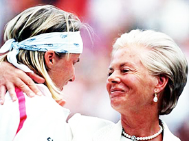
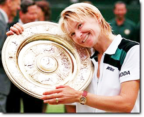
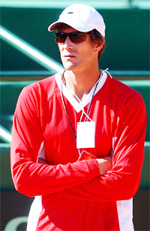
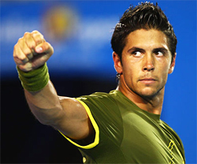
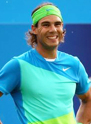

Previous: Offense As Defense | 🏠 Mental Game Home | Next: Overcoming Negative Emotions
Overcoming Choking
Comprehensive unified tennis knowledge base — Fundamentals, Stroke Analysis, Reference Library, and more
Overcoming Choking
By Allen Fox, Ph.D.

Jana Novotna: one of the great chokes in tennis history in 1993.
Many great champions have been chokers but winners, suffering from shaky nerves on important points. What these players all realize eventually is that nerves come and go.
They can choke on one point or in one match and later, in an almost identical situation, come through and play beautifully. This allows them to get past the choked points and matches and remain motivated and hopeful. And their examples should give hope to the rest of us.
The most famous of these choker champions was Jana Novotna of the Czech Republic, who, in the 1993 Wimbledon final, led Steffi Graf 4-1 in the third, 40-15, up two service breaks on her own serve. She was a serve-volley player and Graf had a relatively weak sliced backhand, which makes for a very bad passing shot, especially on grass.
These were substantial advantages for Novotna, but her disadvantage was her well-known propensity to choke in important situations. All Novotna had to do in this situation was get her first serve in and come to net on Graf's backhand.

Novotna, from choker to champion in 1998.
Instead she missed virtually every first serve, double-faulted prolifically, flubbed high, easy volleys by yards, and even hit one smash into the back fence on the fly. It was a horror show that ended with Novotna losing and in tears after blowing five games in a row.
You might have thought such a loss would be the end of her, but four years later she popped up in another Wimbledon final, this time losing to Martina Hingis in three sets after winning the first. But that still wasn't the end.
The following year Novotna's never-say-die attitude paid off as she reached her third Wimbledon final, (beating Hingis in the semis) and this time, miraculously, she won against veteran Natalie Tauzait of France in two sets. With enough opportunities her nerves finally stabilized enough to give her the Championship.
Marty Laurendeau, a former Pepperdine team member, had a similar way of winning. As a low-ranking Canadian junior, he was a walk-on at Pepperdine, and in his first year was not good enough to even practice with the better players on the team.

Marty Laurendeau proved that determination can overcome a tendency to choke.
Not only did he lack the physical tools, but he was also terribly risk-averse and habitually choked when he got ahead. This would have seemed to be check-mate, but it wasn't.
Marty was (and is) highly intelligent and a fanatical worker, so he managed to compensate for his weaknesses. To the surprise of us all, Marty became an All-American in college, a successful touring professional, (reaching the round of 16 at the US Open) and ultimately the Davis Cup Captain of Canada.
How did he do it? Meticulous practice filled many of the physical holes in his game and perseverance compensated for the choking. Marty often choked when he got ahead but this never discouraged him. When his opponent caught up or when Marty got behind, he stopped choking and often played these points well.
In this way the games tended to see-saw back and forth, with Marty getting up an ad, choking his way back to deuce, getting up another ad, choking again, getting down an ad, fighting his was back to deuce and ultimately, Marty would either play a good point when up an ad or his opponent would mentally tire of the process and screw up to lose the game.

Serena Williams: pro level determination.
We saw something similar with the William sisters in the first article. (Click Here). Like Venus and Serena, determination gave Marty multiple opportunities and he would eventually prevail.
Marty Laurendeau, Jana Novotna, and the Williams sisters are only a few examples of chokers who are winners. There are plenty more - Thomas Johannson (winner of the Australian Open) and Amelie Mauresmo (winner of the Australian Open and Wimbledon) are a couple of the better-known examples, as is Todd Martin, who famously blew a 5-1 lead in the fifth set in the 1996 Wimbledon semi-final against his former Northwestern University teammate, MaliVai Washington.
Nonetheless, Martin was greatly respected on the tour for his courage and persistent competitiveness. For example, in the 4th round of the 1999 US Open he trailed Greg Rusedski two sets to love with Rusedski serving for the match in the third. Todd came back to tie the match at two sets all, then went down 1-4 in the fifth set before finally winning and then going on to reach the finals of the tournament.
On the other hand there are many more players who are excellent on the big points and don't often choke, but who do have losers' mentalities. These are the physically talented individuals who tank when they get behind, or don't like to practice, or who become angry or distracted in competition, or habitually make excuses, etc.

Todd Martin: respected for courage and competitiveness.
Choking certainly makes winning more difficult, but it doesn't make it impossible unless you allow it to discourage you or otherwise get to your head.
Greater investment in preparation strengthens resolve. Fernando Verdasco, a talented Spaniard with one of the biggest games on the tour, had been known throughout his career for choking and frittering away matches he should have won. But in the 2009 Australian Open he changed.
He still suffered from his propensity to choke, but instead of becoming discouraged he remained motivated, composed, and intense. As a result he had a great tournament, blowing out the hottest player on the tour, Andy Murray, and wrestling in an admirable but losing effort with the ultimate tournament champion, Rafael Nadal, in a record-breaking 5 1/2 hour semi-final.
The change was probably produced by his new-found emphasis on physical conditioning. Good-looking and physically talented, Verdasco had always been known on the tour as a bit of a playboy. Hard work had never topped his priority list.

Fernando Verdasco had been known as a playboy who frittered away matches.
But this time, before heading for Australia, he devoted the better part of a month in Las Vegas to getting in incredible shape under the supervision of Andre Agassi's trainer, Gil Reyes. Putting in the "hard yards" (as Brad Gilbert termed it) was an investment in preparation that Verdasco was unwilling to squander by tanking after choking. In general, players who invest heavily in preparation and conditioning are better able to withstand the mental rigors of competition, not just the physical ones, than the less diligent.
If you choke, realize that you will have more opportunities. One means of calming the nerves and countering the feelings of desperation that may arise in crucial situations is to tell yourself that you will have other opportunities - that this is not your only chance to win the set or match.
In fact one of the primary factors that makes players choke is feeling that they must win a particular point or game. They fear that if they don't their opponents are likely to rebound and beat them.
They get that unnerving "it's now or never" feeling and ascribe too much importance to their immediate performance. Since it is impossible to guarantee that you will win any point or game, believing that you must do so succeeds only in making you nervous.

At the Australian Open, something changed for Verdasco.
When you are uncertain of winning, it is best to ascribe the same emotional importance to every point and try to slide past the big ones without taking excessive notice of them. This is easier said than done, but it is important to make the attempt.
Try to take your normal risks, and assume you will have other opportunities regardless of what happens on any particular point. If this doesn't work soldier on anyway, bearing in mind that nerves come and go, and just because you choke on one point it doesn't mean you will choke on the next.
Don't focus on winning. A common source of nervousness is thinking about winning or losing. As best you can, work to push such thoughts out of your mind.
Of course this is never totally possible, but as with many problems that have no total solution, you have the choice of making them better or worse, and the more intently you focus on winning, the worse off you will be. Only when you are totally confident of winning is it useful and motivational to deliberately bring these thoughts to the forefront of your mind.

The difference for Versdasco: the influence of Gil Reyes.
If you are fearful and uncertain, pondering outcomes is scary and will magnify your fears. Because you can't be certain of winning, such thoughts will only serve to make you more nervous.
Picture this: you are in the Wimbledon final and holding a match point in the fifth set on your opponent's serve. As he begins his motion for what you expect to be a 130 mph, skidding delivery, imagine that you start having thoughts like, "All I have to do is win this next point and I'm Wimbledon champion!" or "If I can just get this ball back in the court maybe he'll miss!" Or, worst of all, "I hope he double-faults!"
If you were to let any of these thoughts flit through your head, how good would your chances be of hitting a decent return? Very poor, I'd wager.
Thoughts of winning lead can lead to choking.
Unfortunately, simply telling yourself to stop thinking about winning doesn't work. In fact it makes you think about winning all the more. But since your mind can only focus on one thing at a time, you must try to fill it with other thoughts that are simple and helpful. Then it will not have the freedom to dredge up those daunting thoughts about winning that are likely to surface at these times.
Rituals
This is where rituals and focusing come in. Rituals are sequences of activity that you perform leading up to the start of the next point that are always the same. Notice the word, always, which is meant to emphasize the concept that these activity sequences do not change.
Rituals calm the nerves. They form an island of stability in a sea of competitive uncertainty because they are completely under the player's control, unlike the outcome of the next point. Filling your mind by focusing on a simple, controllable and repeatable rituals reduces fearful thinking and choking, because when you are thinking about one thing you cannot think about another.
You can afford to think about winning only in the rare circumstance you are totally confident.
To get some idea of how rituals and focusing work, take a moment to try the following little exercise: Hold your index finger up in front of your eyes, about a foot away, focus intently on it while moving it slowly up, then down, and then side to side.
And while you were focusing on your finger, what were you thinking about? The answer is, of course, your finger. The point here is that your mind tends to focus intently on only one thing at a time, attenuating other thoughts.
Thus as a part of an effective ritual, unwanted thoughts of winning are diminished by filling your mind with simple, unemotional, and useful thoughts - like watching the tennis ball. Your focused mind does not have the freedom to simultaneously worry about winning.
Return Ritual
Here is a simple, helpful sequence I used myself when returning serve that has proven helpful to others. Immediately after the previous point ends, feel nothing. Have no emotional reaction at all, win or lose.
Don't let your eyes wander to your opponent, others courts, or spectators.
Then as you walk slowly and deliberately toward your receiving position, relax, and take a deep breath or two, holding the air in your lungs for a second before deliberately relaxing and letting it be expelled.
Don't let your eyes wander around toward your opponent, other courts, or onlookers. You can look at your strings, as so many players do, or at your shoes, as Fred Stolle used to do, or some other neutral, close-by object.
When you reach your receiving position, start to get yourself a little energized. Bounce up and down a time or two to get activated and ready.
Then, as your opponent prepares to serve, open your eyes wide and focus on the tennis ball. Watch it as he bounces it a few times in preparation for his serve. Visualize a powerful, deep serve return.
Plan where you want to hit it, particularly on the second serve. Remember the good feelings you had in the past when you stepped in on the return and forcefully drove it deep.
After the return ritual, it's all reaction: short backswing, weight forward,flexible hands.
Allow this to recreate the emotions you felt then of strength, aggression, and optimism. Keep your eyes glued to the ball as he/she tosses it up on his/her serve, and make sure you see it come off the court on your side of the net.
Think: short backswing, watch the ball, weight forward, flexible hands. Your attention should now be on your eyes and emotions. The rest is all reaction.
Observing this simple, focused ritual point after point fills your mind with constructive thoughts and feelings. These supplant (at least partially) the worrying thoughts about winning the match, breaking serve, getting down set point, getting up set point, and so forth.
Of course, these thoughts never disappear completely, but it is better to have them in the back rather than the front of your view screen. It is also a method of putting yourself in a kind of competitive bubble, where you are not distracted or shaken by external events. Your mind is kept just where it ought to be.
Visualizing your best tennis conjures the right emotions.
Visualizing helps create positive emotions. You may have noticed the concept of visualization mentioned in the above paragraphs. This has, for some time, been a buzzword in sports psychology.
Some people think it is useful in the same way as one might learn from watching a moving picture, or that visualizing is a way of practicing an action mentally without actually going through the physical motions. I'm not convinced about this, but I am convinced that it is useful in conjuring up beneficial emotions, and that these beneficial emotions aid performance.
Serving Ritual
Here is a suggested serving ritual which you can feel free to modify as suits your personal needs. Start by relaxing as you walk up to the serving position.
It helps to be relaxed because the racket velocity and control you need to serve effectively come mainly from whipping a loose racket-arm with your legs, torso, and shoulders. If you stiffen up or try to muscle the racket around you actually lose velocity because your stiffer arm can't be accelerated properly.
Keep your hands and wrists relaxed and visualize your keys.
As you walk into serving position keep your eyes focused nearby and off of your opponent or onlookers. Once you reach position, get yourself appropriately activated emotionally. Some players, like Maria Sharapova, even jump up and down a couple of times to get activated.
Then take your time and compose yourself. You want to get into a deliberate, controlled, aggressive, state of relaxed excitement. Set your feet properly and decide where and what type of serve you will hit.
Make sure your arm and racket hand are flexible so that you will have "feel" and control with your hand and wrist during the service action. Bounce the ball a comfortable number of times (usually 3 or 4) Think about your keys and visualize a powerful, deep delivery. Then, let fly.
Other Relaxation Techniques
Of course, there are times when even the best of rituals and the narrowest focus can't calm errant nerves. What other steps can you take to get past the shaky hands and labored breath?

Smile and even laugh at the pressure situations - it's positive and calming.
Nothing works for sure, but there are a few other simple techniques you can try. One is to smile, even laugh if you can. (Imagine how silly you, are getting all wobbly about a tennis match.) It's not, after all, life and death. Smiling and/or laughing causes physiological effects that are positive and calming.
Make a conscious effort to enjoy the competitive process and the crucial situations. Remember, it's a game you are playing for fun. When I was playing and in the midst of a tense match I sometimes joked with people in the crowd. It got them on my side and helped me loosen up and even enjoy the match.
When you feel the pressure tightening you up, slow down. Take your time, and deliberately work to relax. Breathing control helps. Briefly close your eyes, and take a very deep breath. Hold it for a second or two, and then totally relax as you allow the air to be expelled.
As you do, focus on the feelings of serenity you are able to conjure up throughout your body. Picture the stress draining down your arms and out. Now stride erectly back into position taking deep, relaxing breaths.
Another alternative is to try to use an adrenaline response. It can often shake you out of a state of nervous paralysis. Slap yourself on the leg, shake your shoulders, bounce around, make yourself feel excited - not nervously excited, but courageously excited - and exhort yourself to "Come on!" or "Get going!"
Deep relaxing breaths between points can help eliminate stress.
Make yourself feel like a boxer going into the ring to knock out your opponent. You're the Champ!! Get after it. It's exciting. This is the situation you are playing for. Enjoy the excitement.
Playing in tournaments is totally different from playing in practice. I had played tournaments all the way through the juniors, college, and on the tour, over 18 years in all, including five times at Wimbledon, twice at Roland Garros, once at the Australian, and seven times at the US Championships, then held at Forest Hills.
Most people would have considered me a pretty experienced tournament player and well able to handle the nerves of competition. After quitting the tour and while I was coaching at Pepperdine I lost interest in the tournaments and didn't play one for over 10 years.
Then a tournament was proposed for college tennis coaches. It was held back in Alabama or somewhere. I forget the exact venue. In any case, it sounded like fun.

Another option: the adrenaline response to tension. Go for the knockout.
Coaches from all over the country would be there, and none of them were too good. I planned to practice hard for the next few weeks - play lots of sets with my team guys and do plenty of roadwork and sprints.
I figured the other coaches would not embark on such a rigorous program so I would have the physical edge. I sent in my entry and went to work.
The tournament date rolled around, and I was playing awfully well. For a set I could still beat most of the players on my team, so I felt more than ready for this bunch of old coaches.
In the first round I drew the assistant women's coach from Clemson. He wasn't exactly the "old" coach I had pictured. In fact, he was pretty young and pretty big. Luckily, his tennis skills didn't match his size, so I still figured to have a relatively easy time of it, that is, until the match started.
He had a big serve, which he followed to net. But he didn't volley particularly well. Unfortunately, he volleyed well enough to easily knock off the series of shoulder-high floaters I fed him. Try as I might, this seemed to be all I could do, despite the fact that in practice my serve return was usually one of my best shots.
My hands felt like granite in my first tournament after 10 years.
Then there was my serve. Now he would be on the baseline where I should easily be able to control the points. But that didn't happen either. I couldn't seem to get pace on my shots or hit them safely anywhere other than the center of the court.
My hands felt like granite, and I couldn't have out-steadied my grandmother. It was a humiliating, straight-set loss.
In my worst days as a tournament player I had never experienced a drop-off of this magnitude. Although I tried everything, I simply couldn't get loosened up. Of course if I had not controlled myself I would have been even worse, but it showed me that a long layoff from tournament competition will make your nerves difficult to control under pressure, no matter how much experience you have had.
You must accustom yourself to playing and practicing your rituals under pressure. In order to perform well in tournaments you need to play a lot of them. Otherwise your nerves are likely to act up. Playing in practice and playing in tournaments are very different, particularly if you are highly motivated and have a nervous system that revs up quickly (like I do).
To succeed under pressure you need to play under pressure.
Hitting tennis balls and hitting tennis balls under pressure are vastly different animals, although they look the same, and there is nothing odd about you if your tournament game is not up to your practice standard. Your opponent's probably isn't either.
So if you are scheduled to play a tournament or important event you would be wise to compete in a couple of less important events beforehand to accustom your nerves to playing under pressure.
In summary, everyone chokes from time to time, and there is no disgrace in it. It just means you have a strong desire to win, and that's not a bad thing. If you choke but don't let it break you down mentally, you can still win.
Try to enjoy the process of competing; focus on your game plan; maintain discipline and drive; remain hopeful and positive regardless of circumstances; and you will win more than your fair share of matches.
This article is excerpted from Allen's new book, Tennis: Winning the Mental Match, which will be available at the end of 2010 on Amazon and on Allen's new website, www.allenfoxtennis.net.
Read More From Allen!
Visit him at www.allenfoxtennis.net

Winning the Mental Match Dr. Allen Fox
Tennis is mentally the most difficult sport due to it’s personal nature which makes winning and losing feel more important than they are. In this new book, Allen offers his proven solutions to problems such as choking, reducing stress, finishing matches, and developing confidence. Based on a life time of high level play and coaching success, it’s a must for all competitive players.
Click Here to Order.

Winning may not be everything, but Dr. Allen Fox points out that, if we are honest with ourselves, winning is still eminently preferable to losing. In his new book, The Winner's Mind, Allen lays out an original step-by-step plan for succeeding at any of life's endeavors, based on his first hand and very personal observations of the careers of both world-class tennis players and successful businessman.
The bottom line is that even if you are not a born champion--and only a tiny percentage of us are--you can still use the success strategies of champions to tilt the odds in your favor. Writing with brutal honesty and dry humor, Fox lays out the common mental characteristics of winners in sports and in life. He explains the critical role of intellect over emotion. He analyzes the struggle between ambition and fear and the insidious and pervasive fear of failure that undermines so many of us.
He then outline how to confront and overcome these fears in your life and career, even when they are initially subconscious. Must reading from one of the great thinkers in tennis, and a Renaissance Man in life. Click Here to Order.
To purchase this book you can also send a check for $17.95 to Allen Fox, 1120 Inverness Place, San Luis Obispo, CA. 93401. The price includes shipping.

Allen Fox PhD is a former world class player, a coach, a psychologist, and one of the most original and insightful analysts in modern tennis. A top 10 American player from the glory days before Open tennis, Fox played many of the legendary greats, among them Roy Emerson, Rod Laver, Stan Smith, and Arthur Ashe. At Pepperdine he developed the men's tennis program into an elite contender for national titles, and gave Brad Gilbert the insights that became the foundation for "Winning Ugly". His book Think to Win is a modern classic. He has also starred in a series of acclaimed videos, including Pro Secrets of Match Play and Allen Fox's Ultimate Tennis Lesson.
Source: tennisplayer.net archive — Overcoming Choking.docx (John Yandell teaching library, 2002-2022). Extracted and rendered as HTML for Tennis Future Lab.